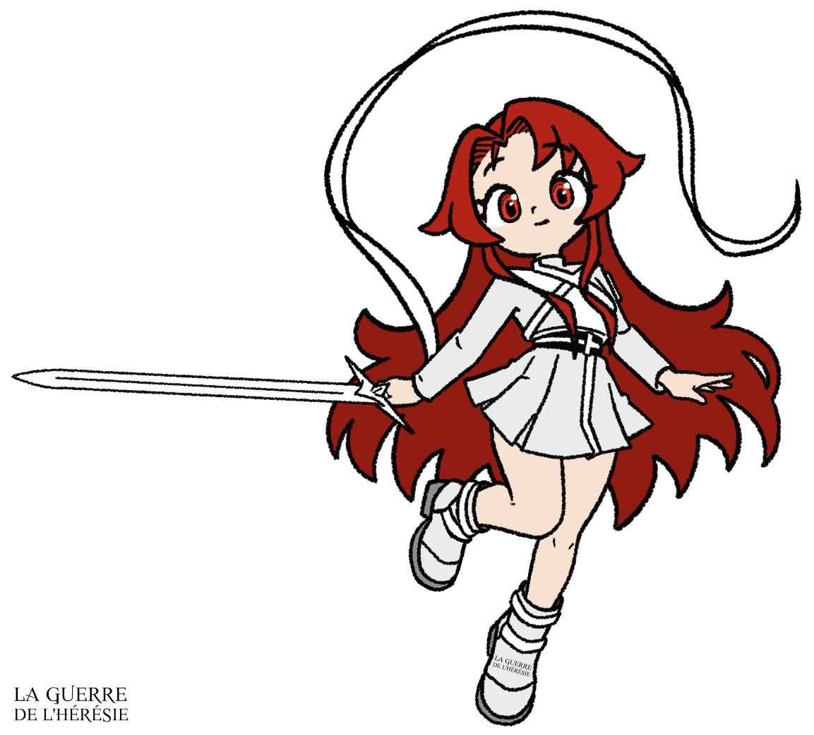

✦ ARCHIVES DU GRIMOIRE ✦
Lexique des Noms
Livre IV · L’Ordre de l’Hérésie
Les définitions du livre 4 de La Guerre de l’Hérésie .
Aucune définition pour le moment
Lettre A
- Aarala
- Monarque des Ruuals doté d’une partie du savoir d’Aarax.
- Aarax
- Roi de l’Acier, souverain des Cybers. Connu pour son immense savoir et sa fourberie.
- Aariaan
- Matière créée par Aarax. Résiste à de très hautes températures.
- Aingeal
- Second d’un Roi, possède un Stigmate endormi. Équivalent royal d’un Archange.
- Aizon Lowdel
- Chef Urteil des Starriest et meneur de la révolution. Possède des yeux sombres et de longs cheveux noirs relevés par des mèches violettes.
- Alazia Hora
- Reine du Temps, souveraine des Elfes et commandante de l’Union Royale. D’une grande beauté, elle possède de longs cheveux blonds et des yeux dorés.
- Alphard
- Entité primordiale, liée à un élément, qui régnait sur l’univers dans des temps immémoriaux. De l’âme des seize Alphards naquirent l’upperium, les différentes races, les artefacts divins et les premiers Rois.
- Amias
- Hauts commandants d’une armée divine. Au nombre de quatre, ils sont sous les ordres directs du haut Arias.
- Ancêtre Originel
- Premier-né de chaque race Vastum. Ancêtre direct des Empereurs. Héritier d’une partie des pouvoirs des Rois.
- Ange
- Soldat appartenant à une armée divine.
- Angst Chime
- Le serpent de l’Apocalypse. Chevalière Blême de l’Apocalypsia, fille adoptive de Celian Russ. Détentrice des Glasya, les Dagues de Midrash.
- Ansicht
- Race de la Peine née des retombées de la Guerre Originelle.
- Anti-upperium
- Particules mystiques générées par les divinités, capables de dévorer leur propre élément.
- Arbre des Fées
- Arbre légendaire de la Reine des Fées. Des êtres mystiques peuplent ses étages, de ses racines à ses branches.
- Archange
- Second d’un Dieu qui possède un Stigmate endormi. Équivalent divin d’un Aingeal.
- Arée Lazima
- L’héritière des roses, Major de la 4e Squada de l’armée impériale Streik. Arbalestier timide et fidèle.
- Arias
- Plus hauts mortels d’une armée divine. Au nombre de trois, ils sont sous les ordres directs de l’Archange.
- Arme de Midrash
- Arme funeste offerte par Natit aux Siennes.
- Asceon
- Créature de glace émanant du Prisme de Midrash.
- Astoria
- Artefact divin de la Lumière, épée légendaire immaculée.
- Atris Streik
- Fils d’Utteros, Empereur de la Haine et des Streiks.
- Auran
- Période plutôt froide de l’année où la nature commence à mourir.
Lettre B
- Bagues de Schéol
- Artefact divin de la Mort.
- Blood Teller
- Pouvoir transmis de génération en génération par les Ancêtres Originels des Vastums.
- Bohord
- Haut Ridire de l’Ordre dévoué à sa Reine, Alazia Hora. Connu pour son intellect et ses pouvoirs temporels.
Lettre C
- Caer Maloyw
- Capitale des Elfes et de la planète Docéliande. Cité fortifiée dirigée par Alazia Hora et l’Ordre des Ridires.
- Calor
- Période chaude de l’année où la nature regorge de couleurs.
- Ceaze
- Reine des Plantes, souveraine des Fées. Réputée pour être la plus belle des femmes avec ses yeux dorés et ses cheveux d’émeraude. Seule divinité capable de purifier l’anti-upperium.
- Celarian
- Commandante du Cercle des Urteils. Jeune femme tourmentée aux longs cheveux bruns. Détentrice d’Erebus.
- Chaînes d’Illumos
- Artefact divin de l’Acier. Arme propre à Aarax dont les pouvoirs gravitent autour de la mémoire.
- Chevalier
- Grade donné aux soldats Siennes qui dirigent une Fraction de l’Apocalypsia et qui détiennent une arme de Midrash.
- Chock
- Boisson Freezin, fèves infusées dans du lait de chèvre.
- Coeur d’Heara
- Site d’Heara formé par d’immenses chutes d’eau.
- Coquéras
- Petit cactus du désert au goût sucré.
- Cor Meum
- Réserve de particules d’upperium chez un être.
- Corne des Rois
- Repas de fête, viande marinée cuite dans un bouillon.
- Croow
- Mets propre à Flumine constitué de saucisse entourée de pâte.
- Cybers
- Race primordiale de l’Acier.
Lettre D
- Dernier Aurevoir
- Pouvoir qui se manifeste à la mort d’une Fée. Supprime l’existence de la Fée en question de la mémoire de ses proches pour soulager leur peine.
- Despair
- Archange, Prince des Fantasmas et fils d’Omia. Realtin aux allures de félin, tué par Nate Ansicht lors de la Guerre des Mortels.
- Désert d’Amya
- Grand désert qui s’étend sur la quasi-totalité du monde des sables.
- Dévaudan
- Dieu du Vide, souverain des Ersuls. Être bestial à la peau sombre parsemée de motifs blancs. Souvent retranché sous une capuche déchirée.
- Dhorox
- Hybrine à l’apparence d’homme, de taureau et de serpent.
- Dieu
- Être mystique porteur d’un Stigmate défiant les contraintes du temps, à la puissance de dizaines d’armées. Représente un élément.
- Dmord
- Bourreau des légendes Freezins. Immense canidé cuirassé.
- Doimh Neacht
- Cité souterraine des doimhiens et capitale du monde des sables.
- Doimh Rialce
- Temple de la Déesse de la Foudre du monde des sables.
- Doimhien
- Habitant sans émotion du monde des sables.
- Dorial
- Papillon de nuit de Freea. Symbole qu’il fait bon vivre dans un village. Ces animaux des glaces sont adorés par la population.
- Dragon
- Race primordiale du Vent.
- Drask
- Être maléfique émissaire des Iryns qui se terrait dans une caverne gelée des Monts Invicta. Invoqué par une sorcière.
- Drymphe
- Famille Nymphite originaire de la surface d’Heara. Anciens gardes d'élite du Dieu de l'Eau.
Lettre E
- Efflorescence
- Art de combat propre aux Siennes. Augmente la puissance d’un coup en libérant son vrai potentiel. Demande le mariage parfait des particules élémentaires et physiques.
- Elfe
- Race primordiale du Temps.
- Elland Desabel
- Père de Faint Desabel, conseiller personnel de l’Empereur Rem Sienne et ami d’enfance de Milia Heart.
- Eltia
- Capitale des Urteils et de Kroyven. Cité moderne qui abrite le château onirique de l’Impératrice et l'Université d'Eltia.
- Empereur
- Titre héréditaire donné au dirigeant d’un peuple Vastum.
- Ersul
- Race primordiale du Vide.
- Escouades Divines
- Ensemble des forces militaires des Dieux, dirigées par Omia.
- Estar
- Race primordiale de la Gravité.
- Eternis
- Ville importante du sud-est du territoire Ansicht au bord du lac de la Destinée.
- Euris Erive
- Elfe originaire d’Heara dont le rêve est d’intégrer les Ridires de l’Ordre.
- Ère de l’Incertitude
- Période de l’histoire de l’an 0 à l’an 1042, marquant le règne des enfants des Rois. Elle se démarque par la transition entre la Guerre Originelle et la prise de pouvoir d’Omia.
- Ère Divine
- Période de l’histoire de l’an 1042 à l’an 1094, marquant le règne des Dieux. Elle se démarque par la progression des Escouades Divines sur l’univers.
- Ère Originelle
- Période de l’histoire des temps immémoriaux à l’an 0, marquant le règne des Rois. Elle se démarque par des temps de paix et un échange presque inexistant entre les races.
- Ère Perpétuelle
- Période de l’histoire de l’an 1094 à nos jours, marquant le combat entre les Dieux et les Rois. Elle se démarque par une guerre indirecte portant sur la possession de la Sphère de l’Hérésie.
- Énora Von Dess
- Maîtresse des spectres. Jeune femme Iryns aux longs cheveux clairs et aux yeux dorés. Fille du seigneur de la mort.
- Épheria
- Capacité élémentaire de foudre unique à Nate Ansicht, lui permettant d’augmenter radicalement sa vitesse.
- Éros
- Pouvoir héréditaire des Siennes. Malédiction ou bénédiction de l’amour qui permet d’augmenter la puissance d’un Sienne lorsque l’élu de son coeur est en danger.
- Ésilwen
- Déesse de la Lumière, souveraine des Séras. Démone de lumière dont la chevelure violacée, coiffée en une longue tresse, vire au blanc sous la caresse des rayons de lumière. Frivole et étourdie, elle s’engage pour la défense des peuples.
Lettre F
- Fade Sienne
- Nom porté par Pruinae Enneis avant son enlèvement.
- Faint Desabel
- Le lion de Midrash. Chevalier Noir de l’Apocalypsia, fils d’Elland Desabel. Détenteur de Statora, la Balance de Midrash. Noble aux allures de prince charmant. Défenseur de la justice.
- Fandor
- Le plus solide des Fenris, loup de cristal de Nate Ansicht.
- Fantasmas
- Démon mené par le Despair dont le but est de retrouver la Sphère de l’Hérésie.
- Fenris
- Créature de cristal. Fusion entre un coyote et un loup.
- Festival des Moissons
- Fête annuelle de Ween durant laquelle les habitants remercient la divinité de la Mort pour leurs récoltes.
- Fleur Vespérale
- Nuit qui suit la finale du Kolossum. Fête spéciale pour les habitants d’Heara.
- Flos
- Période tempérée de l’année où la nature reprend vie.
- Flumine
- Ville de l’eau au nord-ouest de Spiegel. Première cité sur le chemin de la Zone Prohibée. Ville où Pruinae Enneis a grandi.
- Freea
- Planète gelée du Tracé des Mondes peuplée de Freezins.
- Freesester
- Village des neiges sur la planète gelée de Freea.
- Freezin
- Peuple des glaces vénérant la Déesse de la Foudre. Ils se distinguent par leurs cheveux blancs comme la neige.
- Fulgur
- Le plus rapide des Fenris, loup de cristal de Nate Ansicht.
Lettre G
- Gawane
- Haut Ridire de l’Ordre et fidèle serviteur d’Alazia Hora. Il est connu pour sa grande force physique.
- Gideon
- Archange de la Mort reconnu comme le plus puissant Archange des Escouades Divines. Possède la capacité de se transformer en une entité démoniaque géante.
- Gleam
- Capitale des Streiks et du sud d’Ylluf.
- Greedis
- Race primordiale du Feu.
- Griminis
- Petite créature du monde de Ween. Diablotin ou lutin rose qui se nourrit des gemmes de la forêt de Ween.
- Guerre des Mortels
- Guerre entre les Fantasmas et les Streiks, suivie de la bataille entre les Hybrines et l’alliance des Streiks et des Siennes.
- Guerre Divine
- Conflit entre les Rois et les Dieux de l’an 1064, vol de la Sphère de l’Hérésie, à l’an 1097, mort du Guerrier Félon.
- Guerre Originelle
- Première guerre de l’histoire opposant Nécro aux Rois. Se conclut en l’an 0 par la chute de Nécro.
- Guerrier Félon
- Tueur de Dieux qui a trahi les Rois pour ses idéaux.
Lettre H
- H-Oblivion
- Capacité astrale basée sur l’hydrogène propre à Pruinae Enneis.
- Hatter
- Fruit doimhien, riche en eau. Permet au peuple des sables d’étancher sa soif.
- Heara
- Planète neutre du Dieu de l’Eau, entièrement recouverte d’un immense océan.
- Hearaïte
- Matière légendaire bleu clair, entre le cristal et le saphir. Spécifique à Heara.
- Héréliande
- Langue antique oubliée, héritée des Alphards.
- Horizon Stellaire
- Coffre dimensionnel personnel. Permet d’entreposer des objets réceptacles d’upperium.
- Hybrine
- Race primordiale de l’Ombre.
Lettre I
- Imperium
- Capacités naturelles d’un être sans utilisation d’upperium.
- Irilla
- Enchanteresse de saphir. Jeune femme avec du caractère aux longs cheveux noirs et aux yeux sombres avec des reflets de saphir. Incarnation de Lazias, l’artefact divin. Tuée selon sa volonté de la main de Nate Ansicht pour lui permettre d’atteindre son idéal.
- Irs Lys
- Planète des Iryns gouvernée par le Dieu de la Mort.
- Iryns
- Race primordiale de la Mort.
Lettre K
- Kolossum
- Grand tournoi organisé à Heara par l’Union Royale pour recruter des soldats pour leurs armées.
- Kroyven
- Bastion céleste des Urteils. Île volante à l’est d’Ylluf. Sa capitale est Eltia.
Lettre L
- Labyrinthe d’Immia
- Merveille architecturale de l’Ère des Rois bâtie sous le règne de la Reine des Fées.
- Lac Azur
- Lac luxuriant au nord-ouest de Spiegel dans le Pauper. Lieu de la bataille entre les Chevaliers Siennes et le groupe de rebelles de Nix Sieg. Lac spécial pour Pruinae Enneis.
- Lac des Esprits
- Lac qui s’étend dans le secteur est d’Upperia. Lieu des funérailles impériales Ansichts.
- Lance Laurien
- Aingeal du Temps connue pour être la plus puissante des Aingeals et la meneuse des Ridires de l’Ordre. Elle possède des yeux bleus aux éclats d’or et des cheveux blonds aux teintes roses.
- Laud
- Période froide de l’année où la nature se meurt.
- Lazias
- Artefact divin du Vent. Magnifique épée d’obsidienne.
- Lepilis
- Petite créature du monde de Ween. Champignon vivant qui peut se cacher sous son chapeau. Ses spores sont luminescentes.
- Liad
- Gardien du désert à l’apparence d’une grosse libellule. Peut sentir l’aura d’un individu et n’oublie jamais un ennemi.
- Lieht
- Iryns qui a perdu une partie de la bénédiction de la Mort. Victime de discrimination au sein de la société Iryns.
- Linot
- Fille du Vénérable de Freesester. Freezin énergique qui rêve de servir sous les ordres de Dame Sillia.
- Liph
- Race primordiale de la Terre.
- Llarevos
- Capacité ultime et unique d’un Dieu.
- Llif Amser
- Overall de Lance permettant de projeter les différents futurs possibles dans notre temporalité.
- Lune de Docéliande
- Lune sacrée de Caer Maloyw, les légendes lui prêtent des pouvoirs mystiques.
- Lunes de Rêlerie
- Astres du monde des sables.
- Lyas
- Dragonne de sang pur, recueillie par Alazia Hora, dont le destin est intimement lié à la noblesse Ansicht.
- Lyrdis
- Dieu de la Vie, souverain des Lyris. Homme grand, aux longs cheveux blonds, incarnation de l’élégance et du charme. Bras droit d’Omia.
- Lyris
- Race primordiale de la Vie.
Lettre M
- Major
- Grade donné aux soldats d’élite Streiks dirigeant une Squada et un Régiment.
- Manteau d’Éphère
- Art de foudre propre à Nate Ansicht. Consiste à brider un Épheria afin d’infuser de la foudre dans les cellules du corps et d’augmenter drastiquement sa vitesse de base sur une longue période.
- Memoria
- Overall d’Alazia Hora permettant de convertir une seconde en une éternité aux yeux de la cible, tout en en contrôlant le contenu.
- Médaillon de Phébus
- Artefact divin des Plantes.
- Midrash
- Prince des Liphs et fils de Natit, le Roi de la Terre. Connu pour être le guerrier brandissant les 5 armes de Midrash.
- Midrash Obliteration
- Éveil de l’arme de Midrash lorsqu’un Chevalier de l’Apocalypsia lève son sceau.
- Milia Heart
- Impératrice de l’Amour, femme de Rem Sienne et mère biologique de Pruinae Enneis.
- Milobellia Vi Urteil
- Princesse héritière de l’empire de Kroyven. Fille de Noctalia Vi Urteil. Jeune femme aux yeux clairs et aux cheveux blancs. Surnommée Mila par ses camarades.
- Mineur
- Robot doté d’une intelligence commune dont la soif de savoir est insatiable.
- Mode Chromatique
- Activation supérieure des yeux du démon de Nate Ansicht, lui permettant de fusionner avec les particules présentes dans son corps.
- Mode Éveil
- Activation des yeux d’un Ansicht, leur permettant d’invoquer la puissance d’un Dragon.
Lettre N
- Nate Ansicht
- L’épéiste aux yeux d’argent, fils de Xignus Ansicht, Prince Maudit et dernier héritier de la Peine. Major de la 4e Squada de l’armée impériale Streik, détenteur de Lazias.
- Natit
- Roi de la Terre, souverain des Liphs.
- Nécro
- Dieu des Estars et souverain de la Gravité, scellé par l’espoir des Rois. Responsable de la Guerre Originelle après avoir poussé l’univers dans le sang pour répandre son idéologie.
- Nix Sieg
- Chevalier Blanc de l’Apocalypsia. Maître de Pruinae Enneis et de Nate Ansicht. Tué lors de la bataille du lac Azur.
- Nobella
- Deuxième ville de Kroyven réputée pour son centre économique et ses gratte-ciels.
- Noctalia Vi Urteil
- Impératrice de l’empire de Kroyven et des Urteils. Tuée par Nate Ansicht lors de la Révolution des Starriest.
- Nova
- Capacité élémentaire astrale propre à Pruinae Enneis. Simule les effets de la radiation sur un individu. Réduit la puissance d’un adversaire selon le coup porté.
- Nova Phoenixia
- Capacité astrale ultime propre à Pruinae Enneis qui prend la forme d’un phénix.
- Nymphite
- Race primordiale de l’Eau. Humanoïde aux attributs marins, recouvert d’écailles aux couleurs vives.
Lettre O
- Oasis de Rêlerie
- Petite oasis proche de la cité de Doimh Neacht.
- Omia
- Dieu de la Réalité et souverain des Realtins. Héritier de Nécro et commandant en chef des Escouades Divines.
- Ordalie Maie
- Jeune médecin qui se battait dans les rangs des révolutionnaires pour sauver son petit ami.
- Ornilis
- Petite créature du monde de Ween. Poney rose qui possède une crinière proche de la guimauve de Kroyven.
- Overall
- Capacité ultime et unique d’un Roi.
- Oxzorde
- Art de combat propre aux Urteils. Solidifie une partie du corps de son utilisateur.
Lettre P
- Palier Céleste
- Lieu mystique qui représente la jonction de l’âme de Nate Ansicht et de Rayza. Représentation tirée du dernier étage de la Tour Céleste.
- Particule
- Autre nom donné à l’upperium. Il existe deux types de particules, les particules élémentaires et physiques.
- Phéras
- Amias, Ange Iryns en charge de la base de Ween.
- Pointe d’Ygg
- Carreau légendaire constitué des racines de l’Arbre des Fées. Arme connue pour rompre l’anti-upperium.
- Portail d’Aaraxios
- Portail créé par Aarax pour voyager entre les mondes.
- Pralade
- Créature docile du désert proche d’un crabe de roche.
- Premières neiges
- Fête familiale très importante chez les Vastums.
- Prime Major
- Grade donné au soldat d’élite Streik dirigeant l’ensemble des Majors et des Squada.
- Princep
- Grade des soldats d’élite Streiks membres d’une Squada.
- Prisme de Midrash
- Arme de Midrash destinée à protéger le coeur de son possesseur.
- Pruinae Enneis
- La sylphide du lac Azur, fille adoptive de Mellias Enneis. Second Blanc de l’Apocalypsia. Détentrice d’Astoria, la lame astrale. Possède de longs cheveux rouges et des yeux rubis.
- Pteria
- Planète des Fées gouvernée par Ceaze. Théâtre de l’une des plus grandes batailles entre les Rois et les Dieux, en l’an 1096.
- Pterian
- Langue antique des Fées.
- PU
- Sigle désignant les particules d’upperium, le niveau d’un être.
- Pyramide de la Culpabilité
- Artefact divin de l’Ombre. Emprisonne l’âme d’un être et transfère ses capacités à un tiers.
Lettre Q
- Quasar
- Attaque propre à Faint Desabel. Orbe rouge minuscule, à la masse colossale, qui compresse et recrache la matière.
Lettre R
- Ral Sienne
- Empereur de l’Amour, prédécesseur de Rem Sienne.
- Rayza
- Roi du Vent et souverain des Dragons. Sublime Dragon aux écailles d’onyx et aux ailes rouges.
- Realtin
- Race primordiale de la Réalité.
- Rem Sienne
- Empereur de l’Amour, fils de Ral Sienne. Père biologique de Pruinae Enneis.
- Rédemption
- Capacité élémentaire de gravité propre à Faint Desabel. Génère un point gravitationnel hors ou à l’intérieur d’un corps.
- Ridire
- Plus hauts mortels d’une armée royale. Anoblis par un Roi, ils sont sous les ordres directs de leur souverain.
- Ridire de l’Ordre
- Groupe de Ridires légendaires formé par Alazia Hora. Elfes reconnus pour leur force, leur vertu et leur noblesse.
- Rod Flemming
- Fils de Liod Flemming, Princep de la 1re Squada de l’armée impériale Streik. Compagnon d’Arée Lazima.
- Roi
- Être mystique porteur d’un Stigmate défiant les contraintes du temps, à la puissance de dizaines d’armées. Représente un élément.
- Rondsant
- Pâtisserie ronde au beurre ou au chocolat.
- Ruuals
- Être primitif né du Vide. Peuple originel de Ween. Créatures à la peau grise rocheuse et aux traits de nains ou de gobelins.
- Ryvin Hydrs
- L’hydre de Gleam, Prime Major de la 1re Squada de l’armée impériale Streik, fils de Mirr Hydrs. Connu pour être le plus puissant soldat Streik grâce à sa maîtrise de l’espace.
Lettre S
- Satelia
- Enfant des Étoiles. Dernière des Fées tuée par Utteros Streik. Jeune femme aux longs cheveux roses avec un don pour le chant.
- Screaming Lightning
- Capacité élémentaire de foudre propre à Nate Ansicht. Frappe d’une grande puissance et d’une grande vitesse.
- Second
- Grade Sienne donné aux vice-Chevaliers de l’Apocalypsia.
- Senna
- Territoire et cité des nobles de Spiegel au coeur de l’île sainte. Capitale des Siennes et de Spiegel.
- Séras
- Race primordiale de la Lumière. Démon de lumière.
- Sgur
- Haut combattant d’une armée royale. Écuyer formé personnellement par un Ridire.
- Sienne
- Race de l’Amour née des retombées de la Guerre Originelle.
- Sillia
- Déesse de la Foudre, souveraine des Zoltres. Femme à la longue chevelure rousse et aux yeux dorés.
- Singularité
- Capacité taboue à haut risque propre à Ryvin Hydrs qui lui permet de jouir de ses capacités spatiales sans limite de temps.
- Sirue Seil
- Elfe originaire d’Heara dont le rêve est d’intégrer les Ridires de l’Ordre.
- Slicer Streik
- Fils d’Utteros Streik, Prince et Major de la 5e Squada de l’armée impériale Streik. Ami de Nate Ansicht, tué par le Despair.
- Sola
- Langue parlée par toutes les races depuis la Guerre Originelle.
- Sphère de l’Hérésie
- Artefact maudit où a été scellé Nécro, le Dieu de la Gravité. Offre la puissance du Dieu à son détenteur.
- Spiegel
- Bastion céleste des Siennes. Île volante à l’ouest d’Ylluf.
- Squada
- Force militaire. Groupe de 5 soldats d’élite Streiks.
- Starias
- Sphère de pouvoir primaire d’Aizon Lowdel. Confectionnée à partir d’une fleur légendaire.
- Starriest
- Nom donné à l’ensemble des révolutionnaires Urteils.
- Statora
- Arme de Midrash, balance de la Famine du Chevalier Noir.
- Stigmate
- Représentation de l’âme d’un élément, marque attestant qu’un être est d’essence royale/divine. Source des pouvoirs royaux/divins. Marque lumineuse complexe évoquant l’élément, gravée dans la chair d’un Dieu ou d’un Roi.
- Streik
- Race de la Haine née des retombées de la Guerre Originelle.
Lettre T
- Tenebris
- Roi de l’Ombre, souverain des Hybrines.
- Tiestand
- Matière d’une grande solidité faite à partir de sable, propre à Doimh Neacht.
- Tour Céleste
- Tour d’émeraude bâtie au centre des monts Célestia.
- Tour de Rêlerie
- Tour de Tiestand bâtie au coeur de l’oasis de Rêlerie.
- Tracé des Mondes
- Route commerciale tracée dans une zone neutre, entre le territoire des Rois et des Dieux.
Lettre U
- Union Royale
- Union militaire des Rois dirigée par Alazia Hora.
- Upperia
- Capitale des Ansichts et du nord d’Ylluf.
- Upperium
- Énergie vitale qui constitue tous les êtres vivants. Façonne l’intégralité des éléments tels que le feu, l’eau ou la foudre.
- Urteil
- Race de la Sagesse née des retombées de la Guerre Originelle.
- Utteros Streik
- Empereur de la Haine, fils d’Emoss Streik. Tué par Nate Ansicht après avoir déclenché la Guerre des Mortels et agressé Pruinae Enneis.
Lettre V
- Valper
- Haut Ridire de l’Ordre au service d’Alazia Hora. Réputé pour sa gentillesse, sa pureté et sa loyauté.
- Vastums
- Race secondaire née de la confrontation de Nécro et de l’espoir des Rois. Se divise en quatre branches, les Ansichts, les Siennes, les Streiks et les Urteils.
- Vell
- Créature proche d’une salamandre qui possède un poison létal.
- Vespertilio
- Dieu de la Nuit et souverain des Vesps. Voleur de la Sphère de l’Hérésie après avoir trahi les Dieux. Responsable du massacre des Ansichts.
- Vesps
- Race primordiale de la Nuit.
- Vévolus
- Iryns ayant totalement perdu la raison après avoir été privé de la bénédiction de la Mort. Considéré comme des monstres.
- Vols
- Planète de la Foudre, gouvernée par Dame Sillia.
- VS323
- Doimhien expert en posologie qui a secouru Nate Ansicht et Arée Lazima.
- VS442283
- Grand sage doimhien en charge de Doimh Neacht.
Lettre W
- Ween
- Planète reculée des Ruuals. Connue pour être une planète minière avec une forêt merveilleuse de champignons géants.
- Weks
- Ville minière du sud-ouest du territoire Ansicht.
- Wvil Es Ryks
- Cité minière des Ruuals sur la planète de Ween.
- Wvil Es Ween
- Capitale du monde de Ween transformée en bastion par les Iryns.
Lettre X
- Xignus Ansicht
- L’Empereur Bleu, fils d’Erahal Ansicht. Dernier Empereur de la Peine, tué par le Vespertilio.
Lettre Y
- Yeux du démon
- Pouvoir héréditaire de la noblesse Ansicht. Yeux d’argent représentant un dragon qui permettent de matérialiser du cristal et de visualiser l’upperium dans un spectre de couleurs.
- Ylluf
- Planète des Vastums gouvernée par les Ansichts, les Siennes, les Streiks et les Urteils.
Lettre Z
- Zekia Blut
- Prince héritier et Chevalier Rouge de l’Apocalypsia. Tué par Utteros Streik lors de la Guerre des Mortels.
- Zila
- Accessoire Urteil. Permet de rendre un vêtement imperméable.
- Zohlas Drymphe
- Chef de la famille Drymphe, Arias de l’Eau.
- Zoltres
- Race primordiale de la Foudre.
- Zorad Drymphe
- Nymphite de la famille Drymphe, participant du Kolossum.
Aucune définition trouvée pour cette recherche.
✦ POURSUIVRE DANS LES ARCHIVES ✦
Explorer La Guerre de l’Hérésie
✧Le GrimoireRetrouver tous les personnages
✦Page principaleLivres, univers et personnages
❧L’HéréliandeDécouvrir la langue de l’Hérésie
